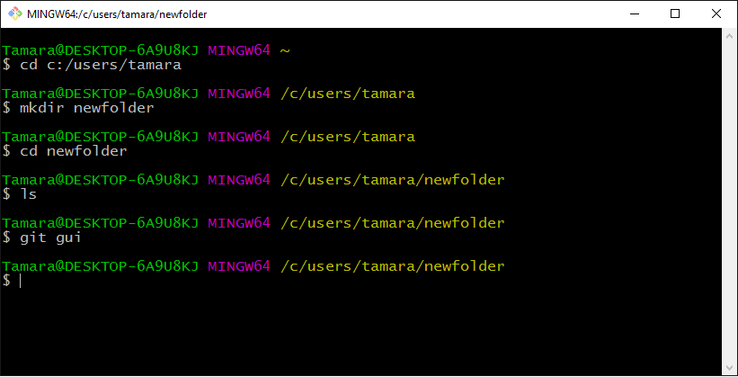

Version Control Basics Using Git
Slides available at: http://kansascitywomenintechnology.GitHub.io/GitBasics
Last Month
In February we learned how to navigate our computer using the command line:
- changing directories using the CD command
- creating new folders using MKDIR
- building basic text documents using ECHO
We are going to build on last month's skills tonight!
What we'll cover
- What is version control?
- How does version control help development teams?
- Distinguish between Git, GitHub, and Git Bash/iTerm2
- Build your first repository (a.k.a. 'repo')
- Discuss forking and branching
- Practice collaborating using Git
Here We Go!

What is Version Control?
At it's core, version control is simply an organized way of tracking changes or variations of a project built over time.
Functionally, the beauty of a distributed version control system like Git is that it allows multiple people to work on the same code at the same time without stepping on each other's toes or overwriting one another's work.

B.G. - Before Git

Image Credit: Smashing Magazine
Linus Torvold

"Torvalds quipped about the name git, which is British English slang meaning "unpleasant person": "I'm an egotistical bastard, and I name all my projects after myself. First 'Linux', now 'git'. - Wikipedia
A.G. (After Git)

Image Credit: Smashing Magazine
Git vs. GitHub
Git is the version control concept and system.
Git Bash/iTerm2 and Git Desktop are tools that help you interact with Git.
GitHub is the place that hosts the repository in the Cloud.
Time to pull out your handouts!
Exploring the Interfaces
Exploring the Interfaces

GitHub
 GitHub Profile
GitHub Profile
Getting Started on GitHub
Intialize your first repository
Clone your new repository to your desktop
Git Workflow
Stage (track) your changes with git add
git add -A
- Commit your changes using git commit -m 'my message'
- Push the changes to your GitHub repository using git push origin master
Git Cheat Sheet by Tobias Günther
GitHub's Official Git Cheat Sheet
Git Workflow

Image Credit: https://GitHub.com/gaui/git
Forking
- You are copying someone else's repository
- Use it to propose changes to someone else's work using a pull request, or
- Use their code as a jumping off point for your own project (being mindful of use licenses!)
###
Let's Practice Forking a Repo
Branching
Branching
- You are a collaborator on a program with permission to update the master repository
- Use branches to isolate features (user stories) of the code
- Each branch can be a single feature, developed independently from other features
- Each developer works on her own feature and then merges her changes into the master
- In this method, pull requests become a way of asking for a peer code review.
###
Let's Practice Branching
Resolving Merge Conflicts
Now What?
Play a Game to Learn GitHub:
PCottle's Git Branching Game
Publish Your Web Page on GitHub Pages using these step by step Instructions:
Pages by GitHub